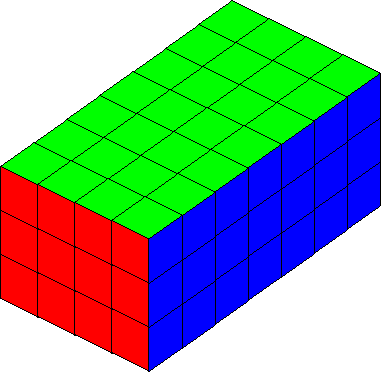
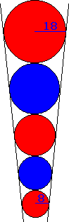

A rhombus, ABCD, has sides of length 10. A circle with center A passes through C (the opposite vertex.) Likewise, a circle with center B passes through D. If the two circles are tangent to each other, what is the area of the rhombus?
Hint - Answer - Solution
The derivative of x2, with respect to x, is 2x. However, suppose we write x2 as the sum of x x's, and then take the derivative:
Let f(x) = x + x + ... + x (x times)
| Then f'(x) | = d/dx[x + x + ... + x] (x times) |
| = d/dx[x] + d/dx[x] + ... + d/dx[x] (x times) | |
| = 1 + 1 + ... + 1 (x times) | |
| = x |
This argument appears to show that the derivative of x2, with respect to x, is actually x. Where is the fallacy?
Hint - Solution
Let H0 = 0 and Hn = 1/1 + 1/2 + ... + 1/n.
Show that, for n > 0, Hn = 1 + (H0 + H1 + ... + Hn-1)/n.
(That is, show that Hn is one greater than the arithmetic mean of the n preceding values, H0 to Hn-1.)
Hint - Solution
Let Hn = 1/1 + 1/2 + ... + 1/n.
Show that, for n > 1, Hn is not an integer.
Hint - Solution
An a × b × c cuboid is constructed out of abc identical unit cubes -- a la Rubik's Cube. Divide the cubes into two mutually exclusive types. External cubes are those that constitute the faces of the cuboid; internal cubes are completely enclosed. For example, the cuboid below has 74 external and 10 internal cubes.
Find all cuboids such that the number of external cubes equals the number of internal cubes. (That is, give the dimensions of all such cuboids.)
Hint - Answer - Solution
Take any positive composite integer, m.
We have m = ab = cd, where ab and cd are distinct factorizations, and a, b, c, d  1.
1.
Show that an + bn + cn + dn is composite, for all integers n  0.
0.
Hint - Solution
Five marbles of various sizes are placed in a conical funnel. Each marble is in contact with the adjacent marble(s). Also, each marble is in contact all around the funnel wall.
The smallest marble has a radius of 8mm. The largest marble has a radius of 18mm. What is the radius of the middle marble?
Hint - Answer - Solution
A boy has four red marbles and eight blue marbles. He arranges his twelve marbles randomly, in a ring. What is the probability that no two red marbles are adjacent?
Answer - Solution
Is the number 2438100000001 prime or composite? No calculators or computers allowed!
Hint - Answer - Solution
A fair coin is tossed n times. What is the probability that no two consecutive heads appear?
Hint - Answer - Solution
| Nick Hobson nickh@qbyte.org |